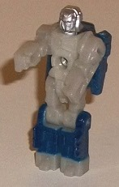
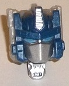
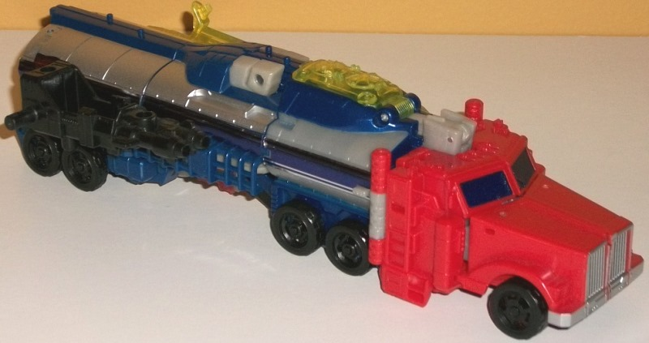
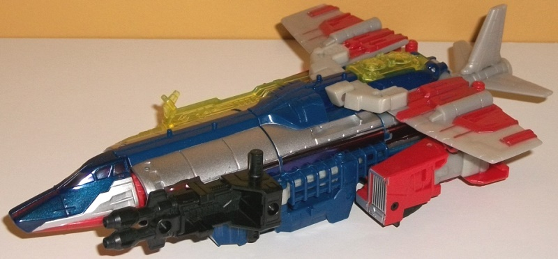
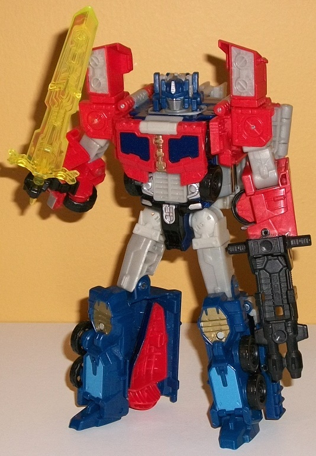

Allegiances
: Autobot
Size
: Voyager
Difficulty of Transformation to Truck
:
Hard
Difficulty of Transformation to Jet
:
Medium
Color Scheme
: Dark blue, moderately
light pale red, light milky brownish gray, silver, and some pale metallic
gold, black, transparent greenish yellow, dark metallic blue, and some
moderately light sky blue
Rating
: 8.2


"Diac", Optimus Prime's
Titan Master, has his general look based off of the pilots from the "Diaclone"
series, which was a Japanese series that eventually spawned many of the
early Transformers toys (minus the pilots). In robot mode, Diac looks quite
a lot like a human in armor, with fists molded on the inside of the arm
pieces, angular details on the chest, and rectangular details on the legs
and feet. The head is molded to look like a human with a helmet on over
the "core head", though the mold detailing is small enough where it's a
bit ambiguous whether it's an actual human or a robot who just has a human-like
face, so of course that decision's up to you. Unforutnately in this mode
most of Diac's plastic is a fairly ugly milky light brownish gray which
just does not look great, especially as a main color. Fortunately there's
at least a bit of paint, with some dark blue on the lower legs and silver
on the head (the latter of which is kind of odd, actually, and I worry
slightly about it scraping off over time). It's still a pretty boring scheme
overall, though. Like all Titan Master figures, Diac can move back-and-forth
at the hips and knees (as one, each leg is bolted together), as well as
limited ball movement at the neck and shoulders. In head mode, Diac is
pretty predictable-- I mean, it's an Optimus Prime head. You're quite familiar
with it, I'm sure. The only difference from the usual is that some of the
side antennae are milky gray because of the color breakup, but the larger
toy itself helps take care of this by partially covering up those gray
antennae with further-out blue antennae. Otherwise, this is a spot-on Prime
sculpt with dark blue plastic, silver on the forehead vent and faceplate,
and blue eyes.



One
Titans
Return Optimus Prime
is not enough, says Hasbro! So here's another.
Optimus Prime's first mode is a truck-- not just his usual truck cab, but
rather a tanker truck. This mode is a bit of a nod to his G2 "Laser Prime"
version, which had a similar alt mode. This mode is remarkably solid-looking
for the most part, with the only really oddity being the gap in the back
bumper and a gray rectangular bit sticking up out of the cab roof, both
of which are used for the transformation to other modes. The proportions
for this mode also seem SLIGHTLY off, with the truck cab being a bit too
wide and the tanker section seeming just a tad short. However, these are
minor issues, and not glaring at all. As you'd expect for an Optimus Prime
toy, the cab is red-- a fairly pale shade of red, actually, and the back
half is dark blue... well, at least on the top and on the bottom sides,
behind the wheels. Because this is a tanker truck, most of the "tanker"
section itself is actually painted silver (along with the front grill)
or covered with a blue-and-silver foil sticker stripe that goes down the
length of the tanker, and like most stickers used on modern TFs, looks
kinda cheap and tacky and just should have been paint apps. For some reason,
however, the first third of the tanker portion is NOT painted silver, but
is actually a light milky brownish gray plastic, which really kinda jumps
out against the silver paint and foil stickers in an unflattering manner.
The dark blue plastic on the top "stripe section" and bottom portions of
the tanker, and metallic dark blue paint on the windows, looks aces, though--they're
both just really good shades. Of course, the tires are black, along with
a double-barreled gun, which can hold a Titan Master in its seat. There's
also some transparent greenish yellow used both for the top window covering
up a little seat where Diac can sit inside the front portion of the tanker,
and for a transparent sword weapon. I'm not too fond of this color, mostly
because of the greenish tint of it. Just a more "pure" transparent yellow
would have fit more with the color scheme, methinks. Because of the way
the pegs and peg holes are situated, neither of Optimus' weapons can plug
in discreetly in this mode-- they both kind of hang off the sides of the
tanker rather obviously. The mold detailing is moderately well-done in
this mode, being quite detailed in certain parts (such as along the sides
and the front of the cab, as well as on the sword weapon and top of the
cockpit window), while some sections, like the tanker, are quite smooth
except for some "bolt" divots here and there. The smokestack details on
the sides are begging for some silver paint, as are the wheel hubs, but
otherwise Optimus has a decent amount of paint in this mode.
Because Optimus is a
voyager in the Titans Return line, he has another alt mode-- this one a
jet. Optimus' jet mode calls back to... well... nothing Optimus, it just
makes it obvious that this is a "pre-mold" for Octane, who has the same
two alt modes. Anyways, to get to this mode you turn the truck mode around,
fold out airplane cockpit halves and rotate the wheels back so they're
not readily visible, rotate the truck cab sections to the sides, unfold
the rear tailfin piece, and then-- in a rather ingenious manner-- unfold
the wings from
in the middle
of the tanker truck mode. It's quite
impressive, how those wings are able to slot in the middle of the tanker
truck mode without being obvious at all in that form. Unfortunately, this
mode isn't nearly as well done. The wings are too small, and the rear tailfins
are DEFINITELY too small-- comically small, in fact. The truck cab halves
also really are afterthoughts as far as this mode goes, not even attempting
to look like anything else and relying on the wings over them to "hide"
them a bit. They also don't even peg into anything, though thankfully the
joints holding them are sturdy enough where this isn't really an issue.
The "meat" of the tanker section of the tanker truck mode is still visible,
but now serves as a long body for the jet mode. The FRONT of this mode
is actually quite good, with some nice dark metallic blue and silver paint
on the top of the nosecone/cockpit section and some red on the bottom and
on the intake vents. There's some foil stickers used for the windows, but
given that they're shiny and so is the glass, I don't mind them at all
here. Once you get a bit down the jet sure there's some undercarriage junk,
as there is on nearly all jet TFs, but it's not overwhelmingly bad or anything,
just a minor downside. I do really wish those wings pegged in somewhere
securely, though, instead of just resting on top of the truck halves--
the red paint on them is pretty good, but all the light brownish gray on
them and the back section of this mode in general does not look great.
The small tailfin pieces have some nice aerodynamic mold detailing on them,
but like the wings don't peg into anything and seem to haphazardly just
stick out the otherwise rectangular back end without really settling into
any secure place. The same cockpit is used for Diac in this mode, just
in the opposite direction, and the weapons store in the same places here
as in the truck mode.
Like Optimus' truck
mode, his robot mode is also an homage to his G2 "Laser" toy, with the
shoulder details (the circles and size of the shoulders in particular),
the angular detailing on the knees, the faux truck window detailing on
his chest, and the head hearkening back to that design (though the head
of course has some modifications, given that it's its own little toy).
The mold detailing of faux headlights and a grill on the main body, as
well as the circular and angular details on the shoulders and lower legs
definitely makes this the most intricately sculpted mode of the three.
The color scheme is also broken up the best here, with quite a few paint
apps to help spice things up-- the dark metallic blue and pale gold on
the chest, the silver on the waist, the pale gold and pale blue on the
lower legs... it really helps vary things up, though unfortunately that
ugly light milky brownish gray plastic is also much more apparent in this
mode, which is unfortunate. To get to this mode from the jet mode, you
basically fold up and collapse the front section into the legs, while the
truck halves become the arms and you fold all the wings back. Unfortunately,
the wings just kinda hang back there behind Optimus' back-- the main wings
can fold in a bit, and the tailfins can fold in half to go up straight
against the back, but it's still all rather unsightly and definitely the
weak point of this mode, having all that "jet junk" back there. The lower
arms are also a bit weak, having obvious tires hanging off a fairly unsightly
section on the inside of the arms. Otherwise the arms look pretty decent,
and the main body section is quite solidly proportioned, with that extra
chest flap helping to "bulk up" Optimus a bit. (Pressing in on the gray
grill piece in the middle of the stomach pops up the antennae on the side
of the head, in case you're wondering.) The legs are very solid, with everything
folded up quite well and out of the way, and the feet-- though small--
keep him stable, with all that mass in his lower legs. An unexpected but
appreciated step is that the hips slide forward so that they're not too
far back in this mode, making him look more "normal" in that respect. For
articulation in this mode, Optimus can move at the neck, shoulders (at
three points; four if you want to count the swiveling of those block sections
above the shoulders), elbows, inwards slightly at the wrists, and at the
hips (at three points), knees, and slightly downwards at the ankles. Because
of all the junk on his back and his thick lower arms, his articulation
is limited slightly more than you'd think up there, but otherwise he's
pretty poseable.
Titans Return voyager
Optimus Prime, like
Titans Return Megatron
,
is largely an unneeded toy. Optimus already had a "Titans Return" toy,
and with the exception of some sections of the robot mode that hearken
back to Optimus' G2 "Laser" form, this is too obviously a premold for Octane.
Still, that aside, this is a pretty decent mold. The jet mode is definitely
the weakest of the modes with obvious truck kibble and some odd proportions,
and the wings do hang off the robot mode rather unceremoniously, but the
proportions and articulation of the robot mode are pretty good and the
truck mode is ROCK solid. Mildly recommended if you're a Prime fan-- otherwise,
get the Octane version of this mold instead.
Review by Beastbot